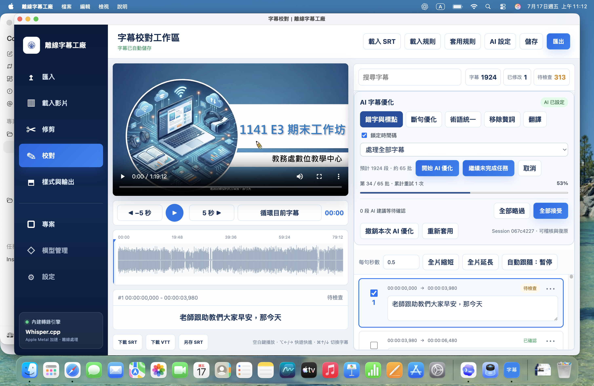
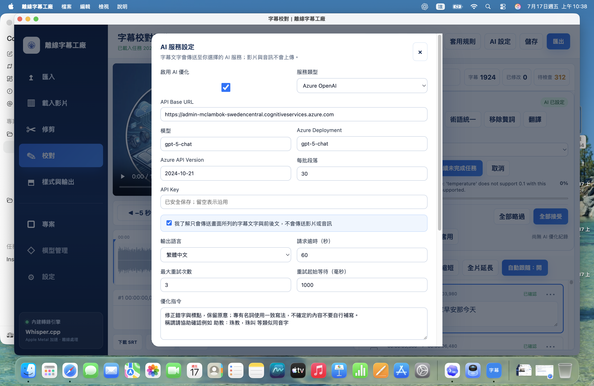
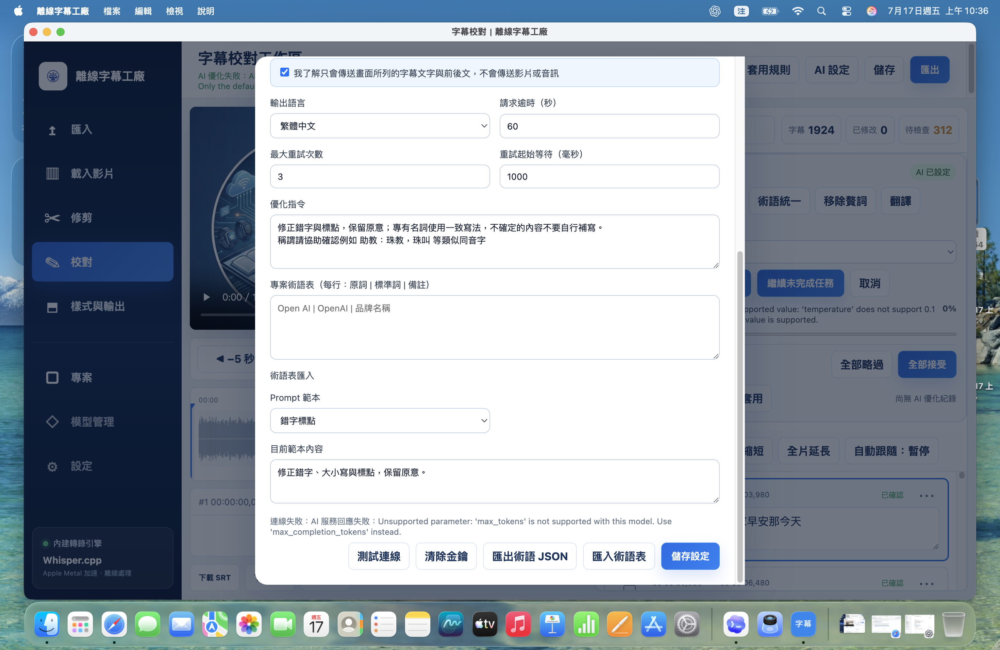

開始前先確認
完全離線的功能
影片處理、Whisper 轉錄、人工校閱及 SRT／VTT 輸出均在本機完成。
需要網路的功能
只有啟用 AI 字幕優化並選擇雲端服務時，字幕文字與前後文會送往所選服務；影片與音訊不會上傳。
1. 安裝與啟動
選擇版本
Setup 適合一般使用者，可建立桌面與開始功能表捷徑；Portable 免安裝，可直接放在資料夾或外接碟執行。
首次啟動
程式內建 FFmpeg、Whisper.cpp 與 tiny 模型，不必另行安裝。大型影片首次載入需等待波形與媒體資訊建立。
保存工作
字幕會自動儲存；重要階段仍建議按「儲存」並另存一份 SRT。
2. 建立字幕的基本流程
匯入影片
按左側「載入影片」，選擇要處理的影音檔。確認預覽可以播放、總長度正確。
需要時先修剪
切換「修剪」，設定起點與終點後輸出片段。長影片可先切小段，提高處理與校閱效率。
執行離線轉錄
選擇語言與模型後開始轉錄。處理期間勿移動來源影片或強制關閉程式。
進入校對
逐段播放、修正文字、時間碼及斷句；完成後可再選用 AI 優化。
3. 字幕校閱工作區

播放與定位
使用前後 5 秒、播放／暫停及「循環目前字幕」反覆聆聽。點選字幕段落會跳到其開始時間。
修改字幕
在右側文字框直接改字；調整每句秒數後可全片縮短或延長。避免相鄰字幕時間重疊。
狀態管理
逐句確認後標記完成。搜尋框可快速找到人名、術語或重複錯字。
4. AI 字幕優化與收合
0.45.1 的 AI 工具預設採精簡模式；不使用時收合，右側即可完整顯示字幕清單。開始或繼續 AI 任務時會自動展開。
選擇工作
可執行錯字與標點、斷句、術語統一、移除贅詞或翻譯。
先處理少量字幕
首次使用新模型時先選一小批測試，確認格式、語言及專有名詞符合預期。
逐項接受
先檢查 AI 建議，再按接受或略過；需要復原時使用「撤銷本次 AI 優化」。
5. Azure OpenAI GPT-5 正確設定

| 欄位 | 建議值 |
|---|---|
| 服務類型 | Azure OpenAI |
| API Base URL | https://admin-mclambok-swedencentral.cognitiveservices.azure.com |
| 模型 | gpt-5-chat |
| Azure Deployment | gpt-5-chat |
| Azure API Version | 2024-12-01-preview |
| API Key | 貼上該 Azure 資源的有效金鑰 |
model_name = "gpt-chat-latest" 是模型名稱；程式送出請求時使用的是 deployment = "gpt-5-chat"。本軟體的 Azure Deployment 必須與 Azure 上的部署名稱完全一致。6. 常見錯誤排除
max_tokens 不支援

舊版請求參數不相容 GPT-5。確認使用 0.45.1；此版改送 max_completion_tokens。
temperature: 0.1 不支援

GPT-5 部署只接受預設值。0.45.1 已不再固定傳送 temperature: 0.1。
仍無法連線時依序檢查
- API Base URL 是否屬於同一個 Azure 資源，且沒有多餘路徑。
- API Key 是否有效、是否貼錯資源。
- Deployment 名稱與大小寫是否完全一致。
- API Version 是否為
2024-12-01-preview。 - Azure 配額、區域及部署狀態是否正常。
- 按「儲存設定」後再按「測試連線」。
7. 輸出與交付
完成最終檢查
搜尋未確認字幕，檢查人名、數字、標點、字幕重疊及過長句子。
選擇格式
SRT 適合大多數剪輯與播放平台；VTT 適合網頁播放器。使用「另存 SRT」保留不同版本。
抽查成品
在目標播放器匯入輸出的字幕，抽查開頭、中段、結尾及快速對話處，確認編碼與時間同步。